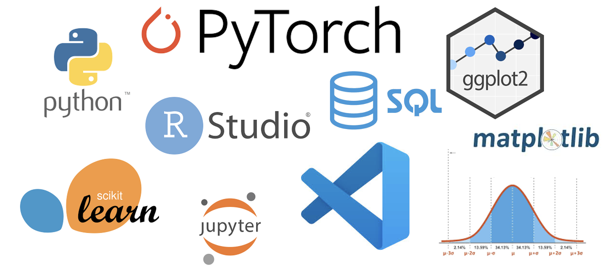

The Dreaded Question
When I decided to go back to school to pursue my master’s, I soon realized that came with a guaranteed question: “What are you studying?” Sometimes I’d try to give a vague reply, and say something like “Data Management” or “Data Analysis”, because I knew if I said the truth – that I’m studying Data Science – the next dreaded question to follow would be “What is that?” I’d end up mumbling something vague like, “Oh, you know, just working with data…” and quickly change the subject. The truth was, I didn’t fully understand it myself at the time! After all, for those not familiar with the term Data Science, it can sound quite elusive – a scientist? Like in a lab?
But as I started my degree and got exposed to this new world of data, I realized that data science isn’t just about “working with data” – it’s about using data to answer questions, solve problems, predict the future, and sometimes, even save lives.
So today, I’m going to go on a deep dive into the world of Data Science and try to answer this often elusive question: “What is Data Science?”
So What Exactly is Data Science?

Imagine you’re trying to solve a mystery, but instead of a detective, you’re using data to find answers. Data science is the process of gathering clues (data), sorting through them, and figuring out patterns or insights that can help you make better decisions or predictions. It’s like piecing together a puzzle – alone, the pieces don’t make much sense, but as you start connecting them together, a bigger picture begins to show.
For example, imagine you’re working for a credit card company that wants to detect fraudulent transactions. You might collect data on things like transaction amount, time, location, and past spending behaviour. A Data Scientist would help identify patterns that highlight suspicious activity, such as a sudden large purchase in a different country, which is likely to be fraudulent.
Data scientists work with data to find meaningful patterns that answer important real-world questions. They might try to answer things like: What insights can we gain from this data? How can we use this information to make better decisions or predictions? Can we use this information to predict outcomes or solve real-world problems?
It’s More Than Just “Big Data”

When people think of data science, they might think of “big data” – huge datasets that are too complex for traditional tools to handle. But data science isn’t just about working with large amounts of data, it’s also about using the right tools and techniques to make sense of any given dataset, whether it’s a few rows in a spreadsheet or millions of data points in a database. Remember that at the end of the day, it’s all about finding patterns and drawing insights.
Some of the tools that scientists use regularly:
1. Programming Languages: Programming Languages like Python, R, and SQL make working with data easy and fast. They are an essential tool that data scientists use in their day to day for things like data cleaning, organization, predictions, and making tasks reproducibile.
2. Machine Learning: One of the most powerful aspects of data science is Machine Learning – the ability to predict future outcomes based on historical data. These tools can help solve complex, real-world problems by predict anything from forecasting sales, to detecting cancer in patients.
3. Statistics: Data Science is a combination of both Computer Science and Statistics. A good understanding of statistical concepts is key for making interpretations. Tools like probability distributions, hypothesis testing, regression, and statistical inference help data scientists draw conclusions from the data. For example you could use a statistical test to determine whether exercise has an impact on sleep quality.
4. Visualizations: How good is all your work if you don’t share it with the world? Data Visualization tools like ggplot, altair, and interactive dashboards are an essential way to tell a story and communicate your findings to an audience in a way that others can easily understand.
Don’t worry if these terms seem unfamiliar right now! I know data science can sound intimidating at first, but as you dive deeper, you’ll see how a lot of these tools and concepts come together. Many of them build on one another, and the more you work with data, the more these ideas will start to make sense. A nice thing about Data Science is that you don’t need to know everything right away, Data Scientists are always learning and growing too!
So Why Does It Matter?
After all of this, you might still be wondering “so does data science really matter?” The short answer is: yes! Data science is everywhere. Because of its broad use of applications, data science can used in almost every industry, leading to efficient, smart, and impactful solutions that help solve real-world problems!
Health Care: In the medical field, data science is revolutionizing how we detect and treat diseases. From detecting early sings of cancer, to predicting disease outbreaks, data science can help doctors make more informed decisions about diagnoses and treatment plans. Data can literally save lives!
Finance: Beyond just fraud detection, data science also transforms the way business make decisions. For example, machine learning is commonly used by banks for credit scoring and loan approvals. It’s also used by financial companies to predict stock market trends and improve risk management.
Retail: Retail companies use data science to help understand customer buying behavior so they can tailor their products and services to what their customers enjoy. Businesses like Amazon and Netflix use data science tools to make personalized recommendations, boosting sales and increasing customer satisfaction. These tools can also help with budgeting and sales predictions.
In a Nutshell
Now that we’ve dived into the world of Data Science, we have a clearer answer of the question: What is Data Science?
It’s the process of using data to solve problems and make predictions, using tools like programming, statistics, and machine learning. It can be applied to a wide range of fields, from science and healthcare, anywhere to business and finance.
Thank you for taking the time to read my blog post, and I hope this has helped you understand what data science is all about and how it’s changing the world around us!